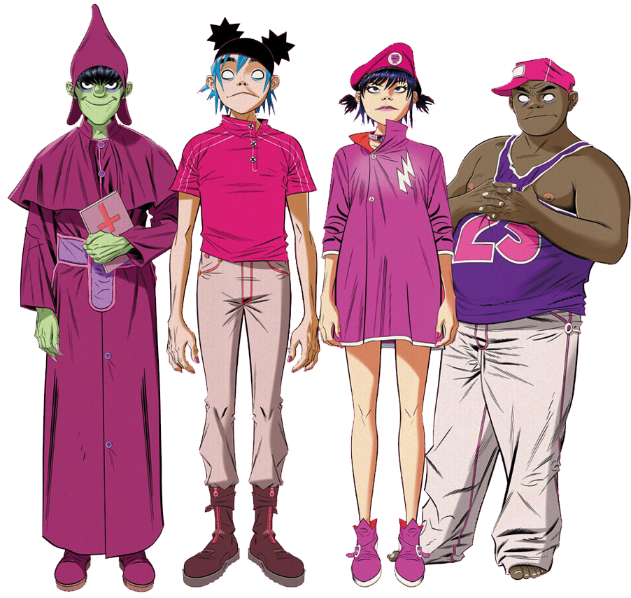

Home Loja Tour Biografia Discografia
Gorillaz é uma banda virtual de trip rock britânica, misturando elementos do hip hop, dub, britpop e eletrônica, criada no ano de 1998 pelo vocalista e líder do Blur, Damon Albarn, e pelo cartunista Jamie Hewlett, co-criador da história em quadrinhos Tank Girl. A banda é composta pelos quatro membros/integrantes animados Stuart “2-D” Pot, Murdoc Niccals, Noodle e Russel Hobbs.
A banda foi criada por Damon Albarn da banda britpop Blur, e Jamie Hewlett, o co-criador da história em quadrinhos Tank Girl. Seu estilo é conhecido por sua variedade e mistura de gêneros, com influências de muitos tipos diferentes de música, mas principalmente do hip-hop, dub-reggae, eletro e pop. Mais recentemente, eles também obtiveram influências de R&B, soul e house music de Chicago.
Damon Albarn conheceu Jamie Hewlett quando o guitarrista do Blur, Graham Coxon, pediu a Hewlett para dar uma entrevista com o Blur, na década de 1990 e os dois originalmente formaram um ódio um pelo outro (Albarn afirmou: "Eu tinha ciúmes de sua personalidade" .) mas não demorou muito até que os dois se tornassem companheiros de quarto na Trellick Tower. Damon Albarn queria se distanciar dos dias de Britpop do Blur e estava procurando uma carreira solo para poder experimentar outros gêneros, mas não sabia por onde começar, enquanto Jamie Hewlett estava ficando cansado de sua série Tank Girl depois que o filme se tornou um fracasso de bilheteria e não tinha interesse em continuar. Os dois acabaram dando várias festas de celebridades em seu apartamento na Trellick Tower (que muitas vezes estava lotado), e foi aqui que o Gorillaz iria surgir.
O Gorillaz foi originalmente criado para ser explorado pela internet (um novo meio na época) e era destinado a um público mais antigo do que as bandas de desenhos animados anteriores a eles, enquanto a qualidade de sua produção musical real geralmente atraía mais seus fãs do que sua existência como personagens de desenhos animados. As bandas que influenciam sua música variam de Massive Attack e The Specials, a De La Soul e A Tribe Called Quest, a Daft Punk e Beck, enquanto são visualmente inspirados por Hanna Barbera, Looney Tunes, Mad Magazine, Heavy Metal, 2000 AD , e muitos filmes clássicos de terror e cyberpunk. Eles disseram que Os Simpsons foram uma grande influência para o Gorillaz "pela forma como invadem a cultura popular e a comentam de uma forma bastante orgânica". Hoje, Albarn diz que Gorillaz foi desenvolvido a partir de “uma obsessão muito mórbida com o fim do mundo”.
